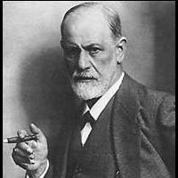

Faculty
Edward Chang
PhD Students
Beitao Li
Kingshy Goh
Yan Meng
Gang Wu
Yi Wu
Huaxin You
Publications
Sponsors
IBM Almaden
IBM T.J. Watson
NSF Career
NSF ITR
Collaborators
Simon Tong Stanford
Brian Chang
Tim Cheng
Larry Lai
Yi-Leh Wu
Tony Wu Morphosoft
|
|

Sigmund Freud (1856-1939)
For a multimedia search task, a query concept is hard to articulate, and articulation
can be subjective. For instance, in an image search, it is difficult for a user
to describe a desired image using low-level features such as color, shape and texture.
In addition, different users may perceive the same image differently. Even if an image is perceived similarly,
users may use different vocabulary (i.e., different combinations of low-level features) to depict it.
Furthermore, most users are not trained to specify simple query criteria using, for example,
Boolean algebra. In order to make information access easier and more personal,
it is both necessary (for capturing subjective concepts) and desirable (for alleviating
users from specifying complex query concepts) to build intelligent search engines that can quickly
learn users' query concepts through relevance feedback.
Traditional learning and relevance feedback techniques, unfortunately, are not suitable for online query-concept
learning for at least two reasons.
- Time and sample constraints. Traditional learning methods such as decision trees and
neural networks require a large number of training instances (i.e., samples)
and can take a long time (more than a few seconds) to learn a concept.
But, online users are typically impatient and cannot be expected to wait around or
to provide a great deal of feedback.
- Seeding constraint. All traditional relevance feedback methods require
users to provide good examples to seed a query. However, finding good seeds is the job of the search engine itself,
and this circular requirement leaves the core problem---learning users' query concepts---unsolved.
The goal of the proposed research plan is to make fundamental advances towards intelligent
search engines through the development of online query-concept learners. The specific
targets are as follows:
- To design novel learning algorithms that grasp a user's query concept quickly
despite time, sample, and seeding constraints.
- To develop techniques that can detect concept drift during a relevance feedback session, and to
handle concept drift in the learning algorithms.
- To devise multi-resolution image characterization methods
for improving both search accuracy and search efficiency.
- To ensure the scalability in feature dimension, dataset size, and concept complexity of the developed
learning algorithms.
- To conduct validation on developed learning algorithms with experimental data
provided by colleagues at IBM Laboratories, Sony, and Benchthalon.
The project's broader impacts upon information retrieval are potentially substantial.
First, rapid proliferation of multimedia content in digital libraries and on the Web underscores the
increasing importance of having effective multimedia search tools. Second, intelligent query-concept learners
will directly or indirectly make traditional text-based information retrieval
easier and more personal. Directly, a text collection can employ an intelligent learner to better capture users' query
concepts. Indirectly, for instance, multimedia data can be added to a text collection so that searches can be conducted through
interfaces that contain pictures and graphics. Even young students who have not learned
Boolean algebra can use images and graphics to search for stories and books.
In addition to bringing benefits to education, we believe that this research project will further contribute to
making information more accessible for underprivileged users who are not yet able to enjoy
the full benefits of the information revolution.
|